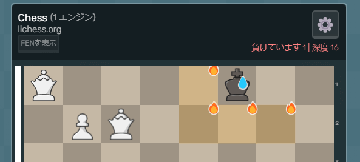
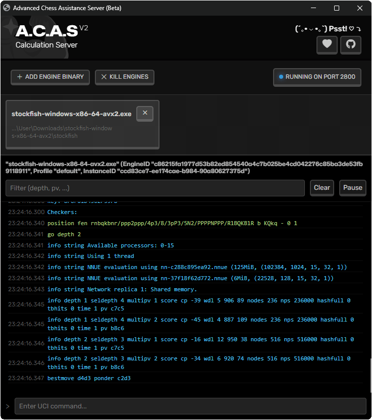
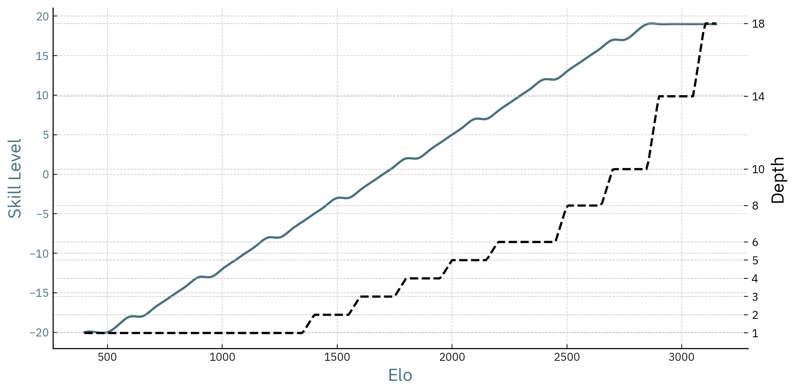
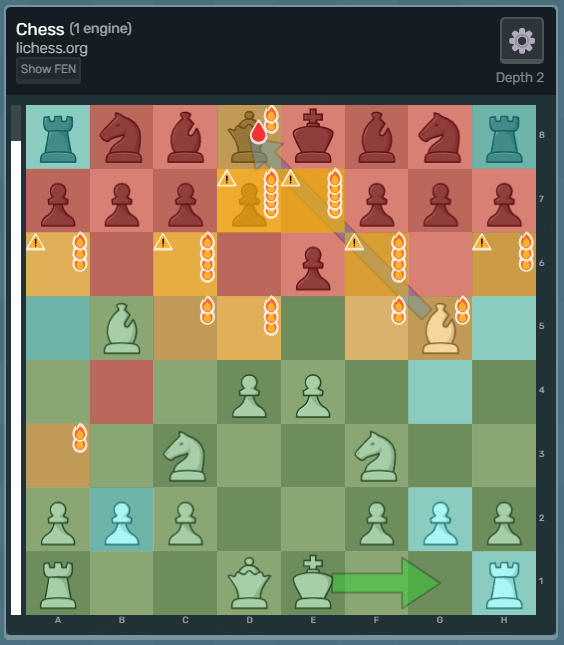

Usage 📖
Using A.C.A.S is easy! Once you have the userscript installed, just keep the GUI open while you're playing on a chess site. By default, the moves it suggests will show up directly on the board you're playing on.
Press Ctrl+D (Cmd+D for Mac) to bookmark this page.
♟️ Supported Chess Sites
- Battletested (Should work flawlessly)
- Stable (Works fine, but might have some minor bugs)
- Uncertain (Might work fine, be buggy, or not work at all)
⚠️ This list might be outdated. Check out the supported sites by clicking on the see all supported sites button.
🌐 Languages

You can change the language using the flag dropdown found on the top right on the GUI.
🔥 Running External Engines (Beta)
Using external engines might be more unstable or even a bit slower than running a browser WASM engine. It depends on your computing power and the chess engine you're using.
This feature is in beta so please expect bugs and report them. Not every local engine has been tested so some might work worse than others. The server has currently only been built for Windows. Linux might be supported in the future, the server is built with Electron which is portable to many operating systems.

Getting started with the server
- (Or compile it yourself, then open it)
Click "Add Engine Binary" button to add your chess engine.
(Windows users should look for .exe)Enable the External Chess Engine on the GUI.
(Otherwise A.C.A.S will use a built-in engine)You will see your engines as list on the GUI. Click to select the engine you want to use.
(Remember to add engines using step 2 to be able to see them)
Meaning of the connection status circle
- 🔴 Something is wrong, the server could not start or crashed.
- 🟢 The server is up, but not connected.
- 🔵 Connected to the client (GUI).
Risks of hosting a server
A.C.A.S supports engines running locally on your machine. It does this by hosting a WebSocket server on localhost. Please understand that running a server is never totally risk-free. While the server is being developed with your safety in mind, it might have vulnerabilities. Never expose the server to the public internet. Thank you for your understanding.
One more thing to keep in mind is that any website you visit might try to connect to the server. The server obviously blocks attempts from unknown domains (cuts off the connection without further notice) and alerts you about them. It's possible to detect that, but it would be weak evidence and most modern browsers limit making requests to localhost, so don't allow every site to make requests to your localhost, only this one.
Having issues with the external server?
Make sure your browser allows this website to use the "Local network" and "Apps on device" permissions.
- Google Chrome / Edge
- Click the lock/config icon in the address bar → Site settings.
- Enable Local network access and Installable / Apps on device permissions.
- Mozilla Firefox
- Click the shield or lock icon → Permissions.
- Allow Local network and Device access.
- Safari (macOS / iOS)
- Open Settings → Safari → Advanced → Experimental Features (macOS) or Settings → Safari (iOS).
- Ensure Local network access is enabled.
⚙️ Settings
⚙️ Floating Panel
The Floating Panel setting creates a small "Picture-in-Picture" view you can resize to be even smaller that will stay on top of every window. It contains important information about the current match.
This setting is very important to know because it stops A.C.A.S from freezing, and makes the engine run faster!
For Chromium based browsers, such as Chrome, disabling the floating panel creates a "mediaSession" which plays silent audio in loop to keep A.C.A.S active, even when not viewing the tab. Please keep in mind that you need to interact with the A.C.A.S GUI everytime you open it, so that this feature activates.
If you don't want to use the floating panel, you can also create two browser windows (tabs) next to each other, so that the A.C.A.S tab is visible, even if just a little bit, which also stops the A.C.A.S tab from freezing.
⚙️ Chess Engine
The Chess Engine setting changes the engine which is used to calculate moves. We recommend using Stockfish 17 Lite as its the fastest and basically strongest engine, although it does not play like a human and has a hard time playing badly. If you want to play chess variants, use Fairy Stockfish 14.
- Stockfish <17 (The strongest gameplay)
- Fairy Stockfish 14 (Chess variants)
- Maia 3 (Semi-realistic human-like gameplay)
- Lc0 with Maia (Semi-realistic human-like gameplay)
- Lozza 9 (Quite strong engine-like gameplay)
- External engine (You choose, can be extremely realistic)
A.C.A.S takes information from the engine's results to give you insights into the match. Some engines offer less of extra information which cannot then be analyzed. Use Stockfish for best results.
None of these engines will play like a human for you. Do not think you can get away playing 2500 ELO matches as a 1000 ELO player with an engine. We do not want to hear any complaining on why you got banned when you broke our ToS.
⚙️ Chess Variant
Most users do not play chess variants, you most likely do not need to change this nor the Chess 960. If you happen to play a variant, A.C.A.S should automatically detect the chess variant you're playing if its supported.
The Chess Variant setting changes the type of chess Fairy Stockfish plays. Other engines don’t really support it, but most do support Chess 960, which is a variant of chess in which the piece starting positions are randomized. If you happen to play variants, you need to use Fairy Stockfish Chess Engine.
⚙️ Engine Elo
The Engine Elo setting controls how strong the engine plays (between 500-3200 ELO). Note that engines like Stockfish are very strong, playing way above human 3000 ELO. For that reason, making them play at low ELO (below 2000) might result in weird behaviour. The "Maia 3" engine is better suited for that.

⚙️ Advanced Elo
The above chart shows a couple variables A.C.A.S changes for you automatically when you use the basic Engine Elo setting. Some users don't like it, so clicking the settings button next to the Engine ELO opens up "Advanced Elo" settings which overrides basic ELO settings. These are loaded dynamically when your engine starts, so you might not see any settings there while you have no instances running. It might also be buggy so refresh the site.
Note that not every "Advanced Elo" setting does something. For example "Ponder" option won't most likely do anything as it's not implemented to A.C.A.S. If you're running a built-in engine, it's limited by your browser and might not be able to take usage of any more cores, memory, external files and so on. The setting is meant for advanced users who know what they are doing.
Feel free to play around and try different things. If you notice something is not working, please understand that the dynamic nature of these settings causes bugs and not everything can be tested beforehand. If you're using a custom engine and encounter them, please feel free to report them to GitHub.
⚙️ Weights
The Lc0 Weights setting determines how the Lc0 engine plays. The weight controls the engine's playing style, influencing the decisions it makes while playing. Maia weights have the ELO they're roughly playing at marked on them. The ELO and playing style of other weights is not known, but most of them are quite weak.
Most weights A.C.A.S has, Maia specifically, are designed to only use 1 search node. It's fine that it goes just to depth 1. Using more than 1 search node might cause weird behavior.
⚙️ Moves On External Site
The Moves On External Site setting adds details about the move (such has the arrow) to the external site, which could be Chess.com for example, directly on the board you're playing on.
Chess sites could implement detections to this. Right now no site seems to detect it, but if you're extra worried, disable this, it doesn't matter if you're not following the engine moves.
⚙️ Theme Color
Theme Color setting and the settings below it allow you to change the theme to your liking.
🟩 Best Move, 🟦 Secondary Move, 🟥 Enemy Move
Enemy move is shown if Opponent Move Guess setting is activated and the square an arrow starts from is hovered. The enemy move arrow is just a guess made by the engine and means that the engine thinks after you make the move the arrow suggests, the enemy will make the move the enemy arrow suggests.
⚙️ Render Settings
The rendering settings allow you to display various metrics about the match. These features do not use the chess engine and don't go into great depths if any at all. The features don't give you straight answers on what to do, but just show you the current situation on the board. Could be great features for learning.

⚙️ Colors
Green squares indicate that at least one of your piece is defending that square, and that the enemy does not have any pieces attacking them. The same goes for Red squares, however it indicates that none of your pieces attack that square and that the enemy has at least one piece defending that square.
Orange indicates that the square is contested, which means that at least one of your- and the enemy's piece attacks/defends it. On the other hand, Aqua means that there is no activity on that square, no one is defending it, nor attacking it.
You can often change the board background color on chess sites. If its hard to see the colors, change the board to be something more white and not so colored.
⚙️ Contested Squares
The Contested Squares setting displays contested squares with the color orange. For clarity, fire emojis 🔥 indicate contested squares too. If two fire emojis are stacked it means there are 4 or 5 pieces attacking that square. 3 fire emojis stacked mean there are 6 or 7 pieces attacking that square, 4 fire emojis mean that 8 or 9 pieces are attacking it, and so fourth.
The fire emoji can have text, for example, 🔥 with -2 text means that the square is defended by 2 less pieces than the enemy attacks it with (e.g. you have 1 piece defending the square, the enemy has 3 pieces attacking it, so 1 - 3 = -2). +2 means that you have 2 more pieces attacking the specific square than the enemy does (e.g. you attack a square with 4 pieces and the enemy defends it with only 2, so 4 - 2 = 2).
⚙️ Own Piece Capture
The Own Piece Capture setting displays your vulnerable pieces. The teardrop emoji 💧 appears on your pieces which are vulnerable to attack. It takes into account the value of the pieces, so it doesn't appear if, for example, an enemy Queen attacks your Rook which is protected. However, if an enemy Rook was to attack your Queen, 💧 would appear on your Queen.
⚙️ Enemy Piece Capture
The Enemy Piece Capture setting displays vulnerable enemy pieces. The bleed emoji 🩸 appears on enemy pieces which are vulnerable to attack. It takes into account the value of the pieces, so it doesn't appear if, for example, your Queen attacks an enemy Rook which is protected. However, if your Rook was to attack an enemy Queen, 🩸 would appear on the enemy Queen.
Didn't find what you were looking for? Perhaps the troubleshoot page can help?
Want to learn even more? Visit the blog page!